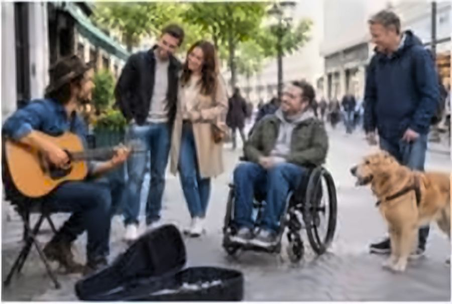
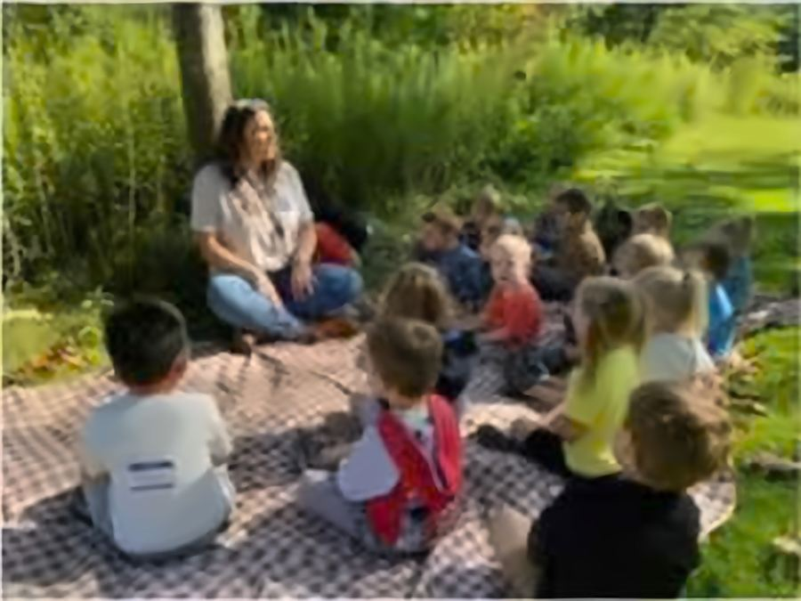
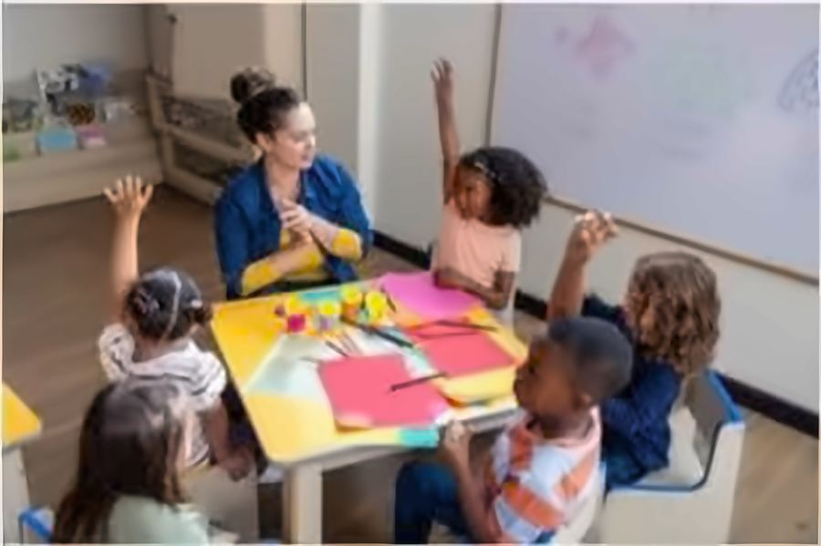

APTIS SPEAKING
PART 1: In this part, I'm going to ask you three short questions about yourself and your interests. You will have 30 seconds to reply to each question. Begin speaking when you hear this sound.
What do you want to do with your family?
I want to watch TV with my family. It is fun and useful. It helps me relax after work and share happy moments with my family. Besides, I can learn a lot of things
Describe a typical day.
I get up at 6AM and have breakfast. I go to work at 7AM and come home at 5PM. In the evening, I watch TV with my family. Sometimes I go to the café with my friends. It’s fun.
Tell me about about your family
There are 4 people in my family; my husband, my children and me. My husband is a doctor. He is friendly and kind. I really love my family. In free time, we often go out together.
PART 2: In this part, I'm going to ask you to describe a picture. Then I will ask you two questions about it. You will have 45 seconds for each response. Begin speaking when you hear this sound.

Describe this picture.
In the picture I can see some people on the street. A man is playing the guitar and the others are listening to his music. A man is sitting in his wheelchair. In the picture, I can see a dog. The people are wearing warm clothes and they look happy. Behind them, I can see many people and some trees. The weather in the picture is very nice. It is sunny and perfect for outdoor activities. I like this picture because I like playing the guitar (it is peaceful)
When and where do you usually listen to music?
I usually listen to music at the weekend. I often go to a café with my friends. Here we can enjoy coffee and listen to music. It is enjoyable.
What do you think about playing or listening to music in public places?
People may have different ideas about this. In my opinion, I think playing or listening to music in public places is exciting. However, it is noisy and it can cause traffic jams
PART 3: In this part, I'm going to ask you to compare two pictures, and then I will ask you two questions about them. You will have 45 seconds for each response. Begin speaking when you hear this sound.


Tell me what you see in the two pictures.
The two pictures show people in different places
In the first picture, I can see some children in the park. They are learning. They look focused. The weather is very nice. It is sunny. Around them, I can see many trees.
In the second picture, I can see some children. They are learning in a classroom.
Do you prefer learning in the classroom or outdoors?
Both places have different attractions, depending on people’s interests.
Some people like learning in the classroom because it is quiet and comfortable.
For me, I prefer learning outdoors because it is interesting and good for my health. I can enjoy fresh air
Should students spend less time in school? Why or why not?
I think students should spend less time in school because it is good for their mental and physical health. They need more time to relax and play sports.
PART 4: In this part, I'm going to ask you three questions. You will have one minute to think about your answers before you start speaking. You will have two minutes to answer all three questions. Begin speaking when you hear this sound.
Tell me about a time you cooperated to complete a task. (=worked in a team/ worked in a group)
How did you feel while cooperating?
Where or how do you think cooperation should take place?